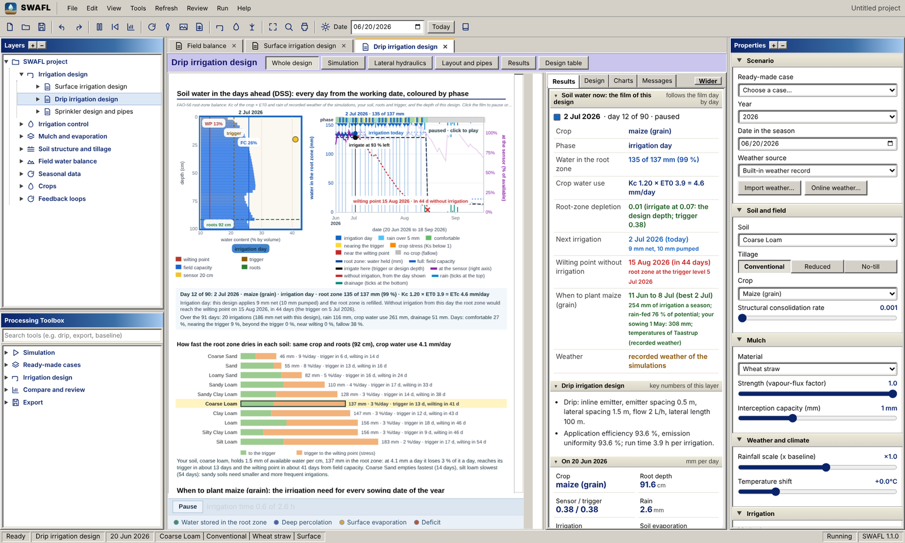

SWAFL: description
Version 1.1.0 · author Naziru Halilu
Introduction
SWAFL is an open-source decision-support workbench for irrigation and evaporation-control mulching. It joins a one-dimensional soil-water model (the Daisy model), a fast daily water balance and closed-form irrigation design modules in one offline program, with the layers on the left, the properties on the right and a dashboard of results beside the drawing. It runs as a desktop application and in the browser.
Its central question is what is left of an irrigation or evaporation saving once the soil, the weather and the irrigation rule are allowed to act. Every number on the screen can be followed to a numbered equation that carries a label of origin: literature, data-driven or engineered.

Summary
- Meta-information: name, version, inputs, outputs, platform and licence
- Focus and context of use
- History of the software
- Concepts: soil water, evaporation and mulch, irrigation control, crops, design hydraulics, the Daisy workbench and the field tools
- Architecture: the layers, the three computing engines and the shared project
- Building a model: soil, weather, crop and management, runs, calibration and outputs
- Strengths and limitations, with what has and has not been verified
Meta-information
| Name | SWAFL (Soil Water, Atmosphere, Feedback and Layout), SWAFL Desktop |
|---|---|
| Version | 1.1.0 (the manual of version 1.0 stays in the repository) |
| Author and contact | Naziru Halilu, github.com/halilunaziru73-creator |
| Type | Decision-support workbench with a graphical front end to the Daisy soil-plant-atmosphere model |
| Inputs | Soil (10 built-in soils, own soil layers), weather (built-in benchmark record 1980 to 1999 with a projection to 2100, bundled Daisy stations, own file in CSV, Excel, DWF, DLF or DAI, online weather of any place, DMI open data), crop (library of 75 crops), irrigation system and rule, mulch, field outline (sketch, KML, GeoJSON, CSV), working date (1980 to 2100) |
| Outputs | Irrigation dates and depths, crop water requirement, soil water and drainage, nitrogen budget, design drawings and hydraulic checks, dashboard, reports, field prescriptions, Daisy figures and logs; weather and results can be saved as .dwf, .dlf, CSV, Excel and JSON |
| Computing engines | A meta-model of 10,190 Daisy runs, a daily 40-layer water balance, closed-form design modules for surface, drip and sprinkler systems; Daisy 7.1.14 for full runs |
| Language and tools | JavaScript, HTML and CSS (Electron for the desktop app); Python for the analysis scripts |
| Platform | Windows desktop application; any current browser for the online workbench (the Daisy runs need the desktop application) |
| Licence | Source code under the MIT Licence; end user licence agreement for the compiled application (installed with the program, with a translation in seven languages) |
| Documentation | Manual of more than 1,100 pages (PDF), four manuscripts with a supplement, data on Zenodo |
| Citation | Halilu, N. (2026). SWAFL. doi:10.5281/zenodo.23043626 |
General focus of the software
- Irrigation scheduling and design: surface, drip and sprinkler layouts, pipe network, pump, hydraulic grade line, design checks and schedule.
- Irrigation control: a sensor and trigger rule, and a soil independent trigger law in which one depletion target becomes a sensor suction for each soil.
- Mulch and evaporation: mulch against bare soil, the fate of saved evaporation (less irrigation, more transpiration or more drainage) and a regime map of evaporation against drainage.
- Soil structure and tillage, root structure, and deterministic virtual phenotyping of one plant under well-watered and drought treatments.
- Seasonal data: reliability over 20 seasons, full water balance, nitrogen budget and projections 10 or 20 years beyond the simulated seasons.
- The real field: field sketch, field on the map, Sentinel-2 indices, water sources, terrain and soil from open data, management zones and variable-rate irrigation.
- Experiments with Daisy: 17 prepared experiments, 53 factors, calibration and publication-style figures.
General context of use
- Research. Comparing irrigation and mulching strategies across soils and climates, with closed water balances and repeatable runs.
- Applied use and advice. Irrigation dates, depths and design checks for a field, with the reason for each number shown.
- Decision support. A dashboard of the days ahead built on weather forecasts, and prescriptions for zones of a field.
- Training. Every screen is documented with labelled pictures; the soil column, the process curves and the response curves show the processes without starting Daisy.
The software is built to be used with the Daisy model and with open data (Open-Meteo, NASA POWER, Sentinel-2).
History
- Version 1.0. Decision layers for irrigation design, mulch and evaporation, soil structure, the field water balance and the seasonal data, with the 10,190-run meta-model. It remains in the repository (
Software/Old_Version_1.0). - Version 1.1.0. The graphical Daisy workbench (guided nine-step path, experiments, process map, soil column, response curves, calibration) with Daisy bundled for Windows; the bridge from Daisy to the decision layers; the library of crops and virtual phenotyping; the field sketch and field on the map; weather from several sources, including online weather that can be saved in every file format; a working date from 1980 to 2100.
Every change is listed in the chapter of the manual on the changes since version 1.0.
Systems, sub-systems, mechanisms
SWAFL describes a vertical column of soil with the crop and the atmosphere above it, and a field of such columns for design. The systems are the soil profile (matrix flow and its hydraulic proxies for the pore network), the surface with its mulch, the crop with its roots and water uptake, the irrigation system with its pipes, and the weather as the boundary condition. Across the field, zones and sources of water are handled by the field tools.
Concepts and modelling formalism
Soil water. Water flow in the soil follows the Richards equation with van Genuchten and Mualem hydraulics. The soil-column solver of the workbench and the daily 40-layer balance use the same retention and conductivity relations.
Evaporation and mulch. The reference evapotranspiration follows the FAO Penman and Monteith equation. Evaporation from the soil and the effect of a mulch are modelled against bare soil, and the water that is saved is followed into less irrigation, extra transpiration or extra drainage.
Crops. A library of 75 crops, refined with the FAO-56 edition of 2025, gives each coefficient with a stated source and daily crop coefficient curves. Water uptake follows Feddes.
Irrigation control. A trigger is expressed as root-zone depletion instead of suction, so that one target applies to many soils.
Design hydraulics. Pipe losses follow Hazen and Williams, with speed checks and pump head; closed-form design modules for surface, drip and sprinkler systems are checked against FAO-45 and textbook examples.
Nitrogen and chemicals. A nitrogen budget over the season, and a chemical budget from Daisy runs that is tested for closure.
Weather. Daily rain, temperature, radiation and evapotranspiration. Online weather is called by place name and then by coordinates from the Open-Meteo archive (ERA5 reanalysis), with NASA POWER as a second service, checked day by day and converted to one daily table that can be saved as a Daisy weather file, a Daisy log, CSV, Excel, JSON or one zip.
Theory
The analysis behind SWAFL treats water management as a set of coupled fluxes: irrigation, evaporation, transpiration, drainage and storage change. A water balance that does not close is not interpreted. For this reason every partition used in the analysis is audited for closure, and a data-driven search must first recover the known balance. The relation between an evaporation change and its fate is described by the soil hydraulic memory, a measurable property of the soil, and the competition between the saturated conductivity and the rate of withdrawal.
The model is one-dimensional and vertical; the pore network is represented through hydraulic proxies, so the findings about hydraulic memory are mechanistic hypotheses. About 470 numbered equations are listed in the manual with their origin and the screens that use them.
Architecture and modules
The workbench is made of layers (22 decision layers in nine groups), three computing engines and one project that all layers share. The simulation engine runs in a separate window and the workbench talks to it through one bridge; the Daisy workbench starts Daisy as a program of the computer and reads its logs. A process map shows the components of Daisy (14 processes, 76 components): opening a component shows its settings, its results and its figures.
| Group | Layers |
|---|---|
| Irrigation design | surface, drip and sprinkler design, pipe network, pump, schedule |
| Irrigation control | sensor and trigger; trigger law |
| Mulch and evaporation | mulch against bare soil; mulch control; evaporation; fate of saved water; regime map |
| Soil structure and tillage | tillage and structure; soil hydraulic drivers; root structure |
| Deterministic phenotyping | virtual plant, well watered and under drought |
| Field water balance | field balance; soil, plant and air; profile evolution |
| Seasonal data | reliability over 20 seasons; full water balance; nitrogen budget |
| Crops | crop water requirement |
| Feedback loops | seven soil-atmosphere feedback loops |
| Daisy output | decision table; fate of a chemical (live Daisy runs only) |
Policy variables and intervention measures
- Irrigation system, layout, depth and trigger (suction or depletion)
- Mulch cover and the evaporation it controls
- Tillage and soil structure
- Crop, genotype and sowing date; fertilizer rate and its precision application
- Drainage and the choice of soil, weather and years
Building and using the model
- Parameters. Soil, weather, crop and management are set once in My data or in the Properties panel; every layer uses them. Built-in soils and crops are used when nothing is typed.
- Runs. The workbench runs a design or an experiment, shows the progress with percentage and time left, and draws the results in figures coded to the process map.
- Calibration and checks. A calibration tool (sequential, CMA-ES and Bayesian) is available before Daisy is started. Every Daisy design is checked against a catalogue of what Daisy can vary.
- Outputs. Dashboard, reports, figures, logs and prescription files; weather and results can be downloaded in several file formats.
Strengths and limitations
Strengths. The program works offline and uses open data when a connection exists; each online service falls back to simulated data and says what it used. Every number can be traced to a numbered equation with its origin. Runs are repeatable: the phenotyping runs are identical when repeated and the soil water balance closes to a very small error. The design modules reproduce FAO-45 and textbook worked examples within 3 percent.
Limitations.
- No field measurement is used and no field validation is claimed. Verification is against worked examples, held-out simulations, independent solvers and stored model output.
- The pore network is represented by hydraulic proxies in a one-dimensional matrix-flow model.
- The phenotyping constants are typical editable values, not data of an experiment.
- Daisy runs need the desktop application on Windows; the satellite and open-data services were exercised on test data only; the application is not code-signed, so Windows may show a SmartScreen warning.
- For three-dimensional flow, detailed crop growth under many stresses, or regional hydrology, a dedicated model is a better choice.
Downloads and status
| Online workbench | SWAFL 1.1.0, no installation |
|---|---|
| Manual | SWAFL Manual version 1.1.0 (PDF) |
| Software | SWAFL_Desktop.zip and the release notes |
| Data | Zenodo record |
| Status | Version 1.1.0 is released. The repository is open under the MIT Licence; the field validation of the results is not yet done. |